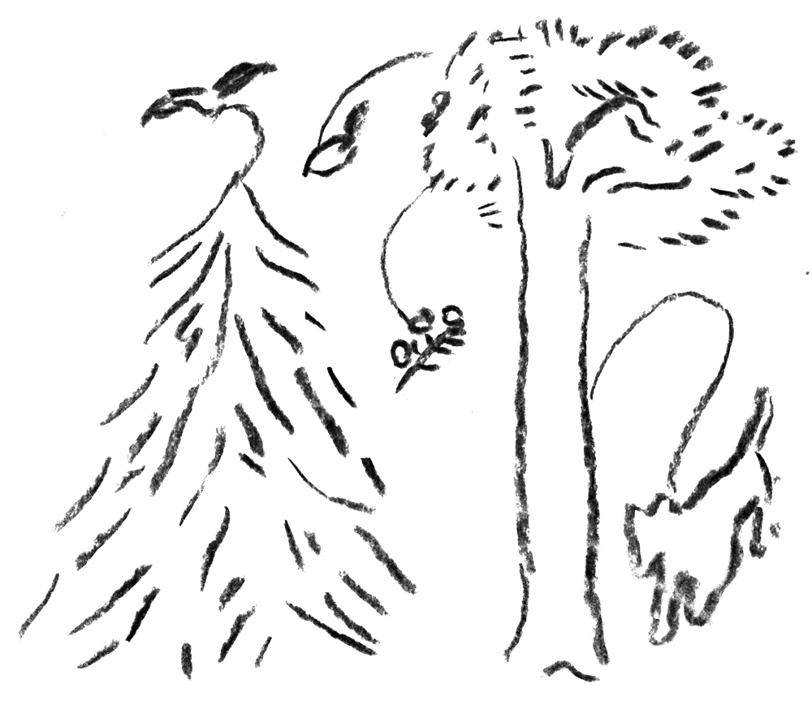

nature
ekosysteemipalvelut
In ecosystem services nature acts as a service-provider to humans. The concept has helped to recognize our dependence on nature, which has long been taken as granted. Do we as 'customers' of this service have a part in it too?
“Forests provide a wide range of ecosystem services demanded by the society, like wood and non-wood forest goods as provisioning services, carbon storage, nutrient and water cycles as regulating services, as well as cultural services like recreation. –– These societal benefits, commonly referred to as forest ecosystem services (FES), have become the focus of a number of European policies.”